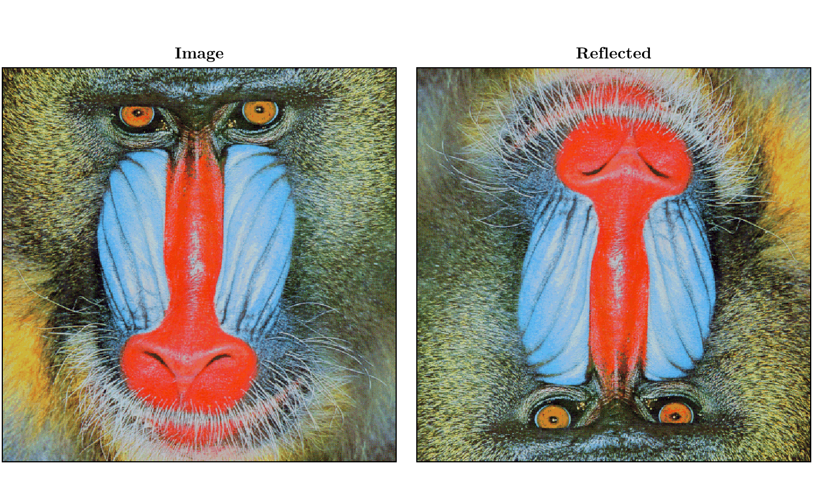

Reflected Arrays
A ReflectedArray is a light wrapper on a parent::AbstractArray that reflects the array in all dimensions.
TransferFunctions.ReflectedArray — TypeReflectedArray{T,N,AA}An array wrapper that reflects the parent around the origin in all dimensions.
TransferFunctions.ReflectedMatrix — TypeReflectedMatrix{T} <: AbstractMatrix{T}Two-dimensional reflected array with elements of type T. Alias for ReflectedArray{T,2}.
TransferFunctions.ReflectedVector — TypeReflectedVector{T} <: AbstractVector{T}One-dimensional reflected array with elements of type T. Alias for ReflectedArray{T,1}.
TransferFunctions.reflect — Functionreflect(a::AbstractArray)Returns the ReflectedArray of a.
For use when convolution filtering instead of correlation filtering.
It is useful for using discrete convolution instead of correlation in the general filter function.
A_reflected = reflect(A)